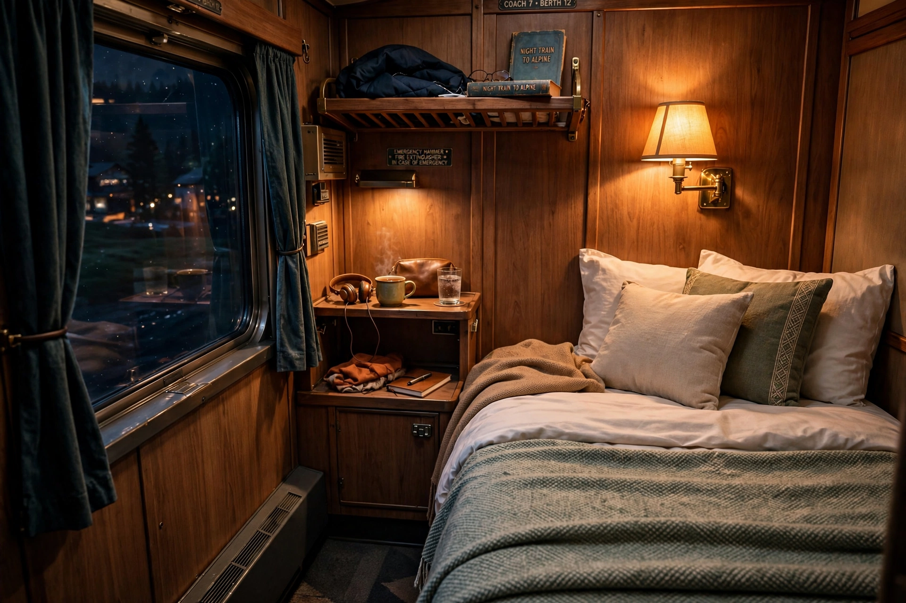

Sleeper train
From Wikipedia, the free encyclopedia

Inside a sleeper compartment.A sleeper train (night train) is a passenger train offering sleeping accommodation — berths in shared compartments, couchettes, or private cabins — so passengers can travel long distances overnight. George Pullman\'s sleeper cars (from 1864) defined the type in America, and Wagons-Lits did so in Europe with trains like the Orient Express. Jets and high-speed day trains shrank night networks after the 1960s, but climate concerns have driven a European night-train renaissance in the 2020s.
Accommodation
Classes range from reclining seats and 4–6-berth couchettes to deluxe cabins with en-suite showers (the Venice Simplon-Orient-Express, Japan\'s Seven Stars, Australia\'s Ghan and Indian Pacific\'s Platinum class). Attendants convert seats to beds in the evening and serve breakfast as the destination nears.
Famous services
Beyond the Orient Express: the Trans-Siberian\'s Rossiya, Amtrak\'s California Zephyr (day-oriented but with sleepers), South Africa\'s Blue Train, and the Caledonian Sleeper between London and Scotland. China runs extensive overnight high-speed sleeper services (dongwo) on some routes.
Decline and revival
DB and SNCF axed most night trains in the 2010s; Austria\'s ÖBB bought the routes and built Nightjet into Europe\'s leading night brand with new-generation trains from 2023, while private entrants (European Sleeper, Midnight Trains — the latter later folding) tested demand. Subsidy and pathing remain challenges.